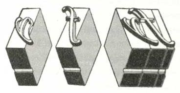
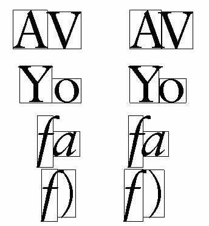
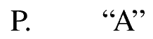
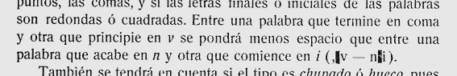
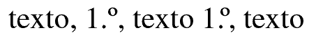
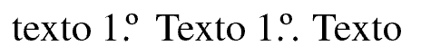

Kerning: el volado de las letras
Qué es, para que sirve y cómo traducirlo
 Kerning es un término inglés usado muy a menudo en tipografía que no parece que haya encontrado una equivalencia en español. La palabra kern designa la parte del ojo de la letra que sobresale de la pieza con el fin de que se pueda superponer con la adyacente, algo que en español se ha llamado volado. El kerning es la operación de ajustar ese volado para mejorar la apariencia del texto y facilitar su lectura.
En la imagen de la derecha, tomada del excelente libro Arabic typography, de Huda Smitshuijzen AbiFarès, se ve cómo el volado sobresale de las piezas y cómo con él se permite la superposicion de las letras. Cuando esa superposición no era deseable, se podían añadir piezas adicionales (como la que hay a la derecha en la figura). Si por el contrario se quería aumentar la superposición, era necesario limar la pieza de forma que aumentase el volado; lógicamente, esto último sólo se hacía en trabajos de mucha calidad (con la monotipia se podía ajustar el tamaño de las piezas, lo que también permitía aumentar o disminuir el volado a voluntad). En tipografía digital, el ajuste es automático y sin necesidad de manipulaciones como las descritas:

Estos ajustes eran imposibles en la linotipia, por lo que las letras creadas para este sistema de composición, como Palatino y Optima, se diseñaban de forma que no necesitaran volado; estas letras son las más adecuadas cuando se usan programas que no tienen la capacidad de ajustar el volado.
El ajuste del volado no sólo se da entre letras, sino también entre palabras, como por ejemplo si una termina con una f cursiva, sobre todo si la siguiente empieza con una letra visualmente incompatible. Puede darse igualmente entre letras y signos de puntuación, ya sea si van pegados o si media un espacio:

A este respecto, Juan José Morato decía en su Guía práctica del compositor tipográfico de 1908:

Ninguno de los intentos de traducir kerning resultan satisfactorios. El término de interletraje (o mejor, interletra) olvida que el ajuste se puede dar con espacios y no sólo entre letras, y por otra parte también la prosa (en inglés, set o tracking) es una interletra. Otra posibilidad es acoplamiento, aunque no siempre el kerning implica que se acople nada. Atendiendo a su objetivo en lugar de a su mecánica, se ha propuesto compensación, en el sentido de compensar ópticamente las figuras de las letras, pero como en tipografía puede haber muchas desigualdades que hay que compensar ópticamente (es uno de sus principales objetivos), parece que le falta precisión. Unos pocos traductores han adoptado cran, a partir del francés crénage, pero se trata de un galicismo inadecuado, pues cran ya tiene otro sentido asentado en la tipografía española. Otra posibilidad es, en fin, aceptar los hechos e incorporar la palabra inglesa castellanizada como quernin o incluso lo que he hecho hasta ahora: adoptar el término español correspondiente.
En español tenemos varios pares de caracteres que necesitan compensación óptica y que son característicos de nuestra ortografía. Un caso importante es el de las abreviaturas con caracteres volados (la palabra volado es polisémica, ya que no sólo designa la parte del ojo que sobresale de la pieza, sino los caracteres de pequeño tamaño que sólo ocupan la parte superior del reglón); en ellos, se crea un blanco visual relacionado con signos bajos como el punto (incluido el que forma parte de la abreviatura) o la coma (primero) que debe compensarse (segundo):

De ahí que tradicionalmente el punto abreviativo supla el punto de final de oración, en los raros casos en que coinciden (primero), o de lo contrario tendríamos un resultado anómalo (segundo):
